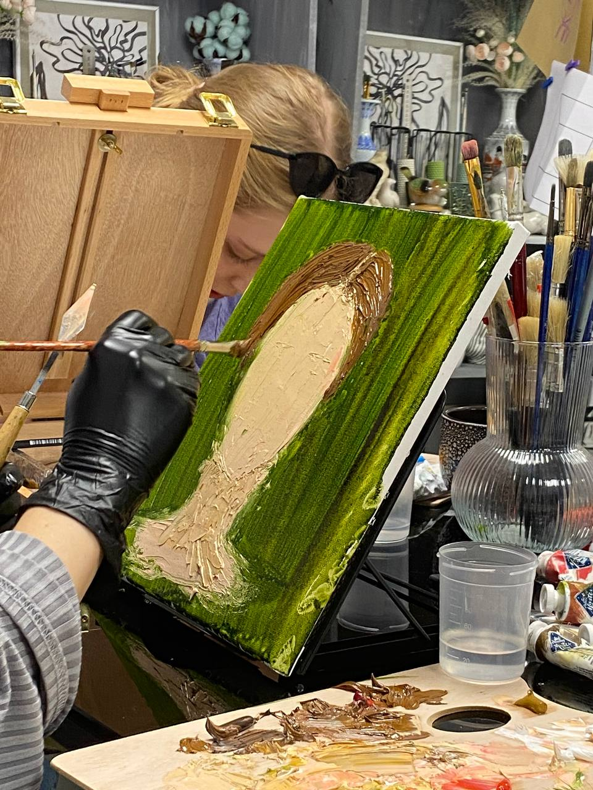
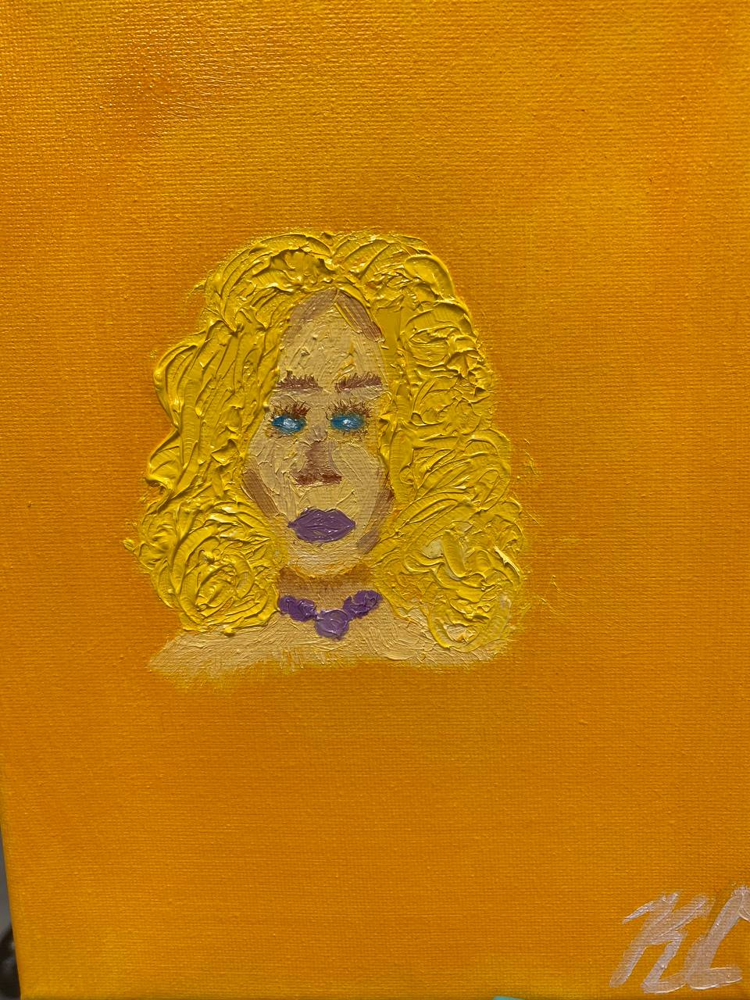
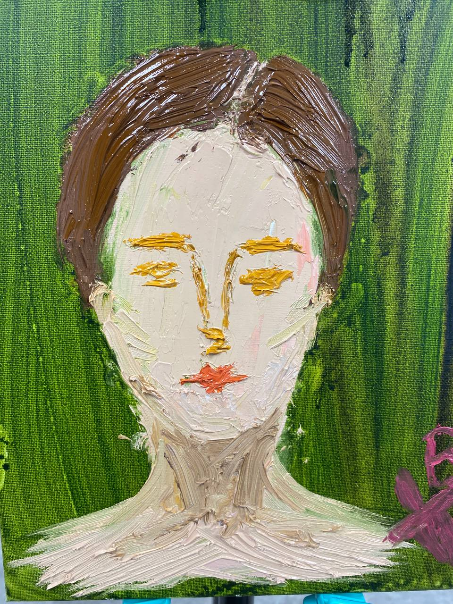

Наша встреча устроена в два такта. Сначала — художественная практика: краски, бумага, руки и автопортрет, который рождается быстрее, чем успевает включиться «я не умею рисовать». Потом — коучинговый разбор того, что проявилось на листе: что этот образ говорит о вас и куда зовёт.
Как это бывает — лучше всего расскажут сами участницы. Ниже — два голоса с последних встреч, публикуем с их согласия.

Ксюша

«Несколько лет назад я уже была на такой сессии, и мне было интересно попробовать ещё раз: посмотреть разницу, что изменилось.
Автопортрет получился совсем другим. Такая взрослая девушка с выразительными голубыми глазами и… немного грустная.
После рисунка была сессия. Теперь реализовывать всё, что отрефлексировала».
Василиса

«Мне понравилось, что всё началось с погружения в мир искусства через теорию, а затем плавно перешло в практику. Особенно хочу отметить чуткое сопровождение и поддержку на протяжении всего процесса — для меня это было действительно важно, потому что рисовать я совсем не умею. Но в какой-то момент я настолько погрузилась в творческий процесс, что полностью отключилась от всех мыслей.
Коучинговый разбор работы был очень глубоким. Он помог увидеть то, что уже было во мне, но до конца я не осознавала — как будто посмотреть на себя со стороны. После этого появилось гораздо больше ясности в том, в каком направлении мне действительно важно двигаться».
Уметь рисовать не нужно — тут это даже мешает. Хотите посмотреть на себя со стороны — записаться можно на нашем сайте.
#какустроено #автопортрет #арткоучинг #отзывы #янеумеюрисовать #МыДолжныБытьВоображаемы